One of the great pleasures of living in Rio Real is having the Senda Litoral almost on my doorstep.
This beautiful stretch of wooden boardwalk follows the Mediterranean coastline from Rio Real towards Marbella, passing beaches, beach clubs, sports facilities and some lovely little places to stop for a drink along the way.
It's a walk I do several times a week, sometimes in the morning, sometimes late in the afternoon when the sun begins to drop towards Marbella.
From Trocadero Arena at Rio Real beach to Marbella's fishing port, it's approximately three kilometres, or six kilometres there and back. It's a wonderful way to get some exercise, but there's always something happening along the way to distract me.
And I never tire of it.
"In the space of a few kilometres, you pass quiet beaches, dogs having the time of their lives, international beach clubs, families playing volleyball and fishermen going about their day."
Starting at Rio Real Beach
I usually start at Trocadero Arena, just below the Rio Real and Torre Real turn-off.
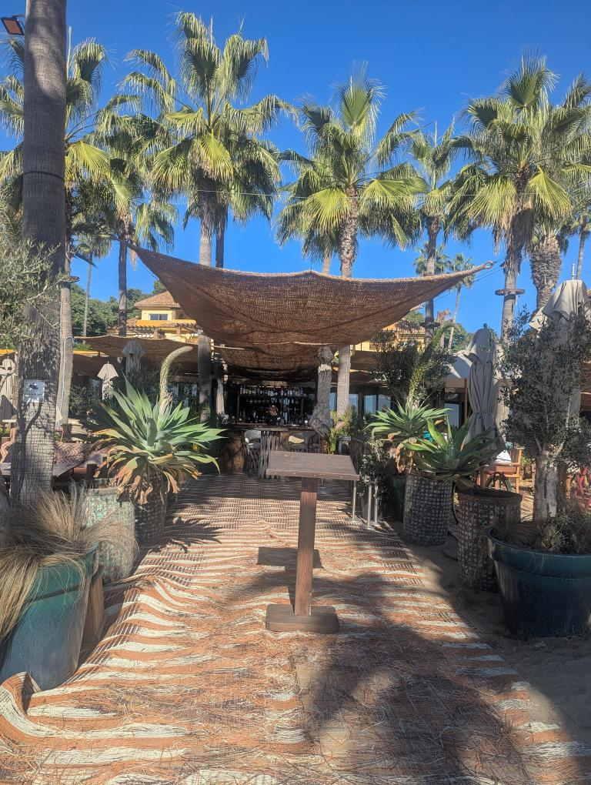
Trocadero Arena, the starting point for the walk at Playa Río Real.
There's a car park beside the restaurant, although it can get busy at weekends and around lunch and dinner times. You'll often find additional parking along the road leading down to the beach.
Alternatively, you can start from the Marbella end and walk towards Rio Real. The Parque del Mediterráneo car park, close to Playa del Cable, is particularly convenient and costs just 1 € per day.
From Trocadero Arena, the boardwalk takes you past the beachfront apartments of Urbanización Rio Real Playa, with a beautiful stretch of relatively undeveloped beach on your left.
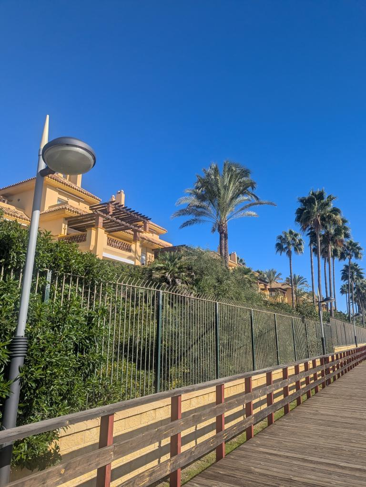
The beachfront apartments of Urbanización Río Real Playa.
Playa Rio Real is one of the quieter-feeling parts of the Marbella coastline, with darker Mediterranean sand and open views across the water to Marbella and the coastline beyond.
The beaches along this stretch are well maintained, and I often see the sand being machine-raked in the mornings. The wooden boardwalk is equally well looked after. You'll pass walkers, runners, cyclists and the occasional scooter, all sharing the path.
What I particularly enjoy is how familiar it becomes. You start recognising people from your daily walks, exchanging a cheerful hola, buenos días or stopping for a quick chat. It's a lovely little community in its own right.
The Happiest Beach in Marbella: El Pinillo Dog Beach
A little further along is one of my absolute favourite parts of the walk: the dog beach at El Pinillo.
I don't think there's anywhere along this stretch where you'll find quite so many happy beach-goers.
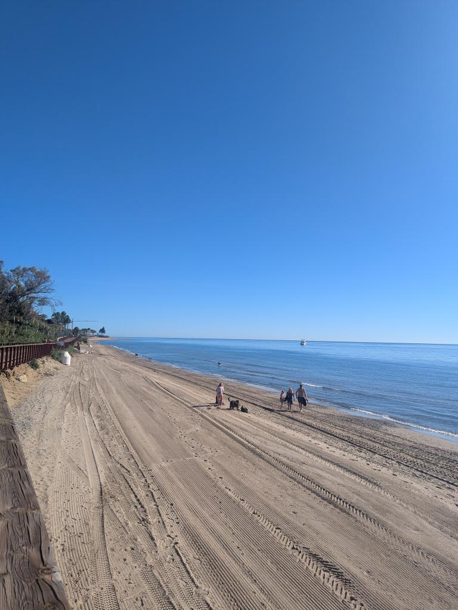
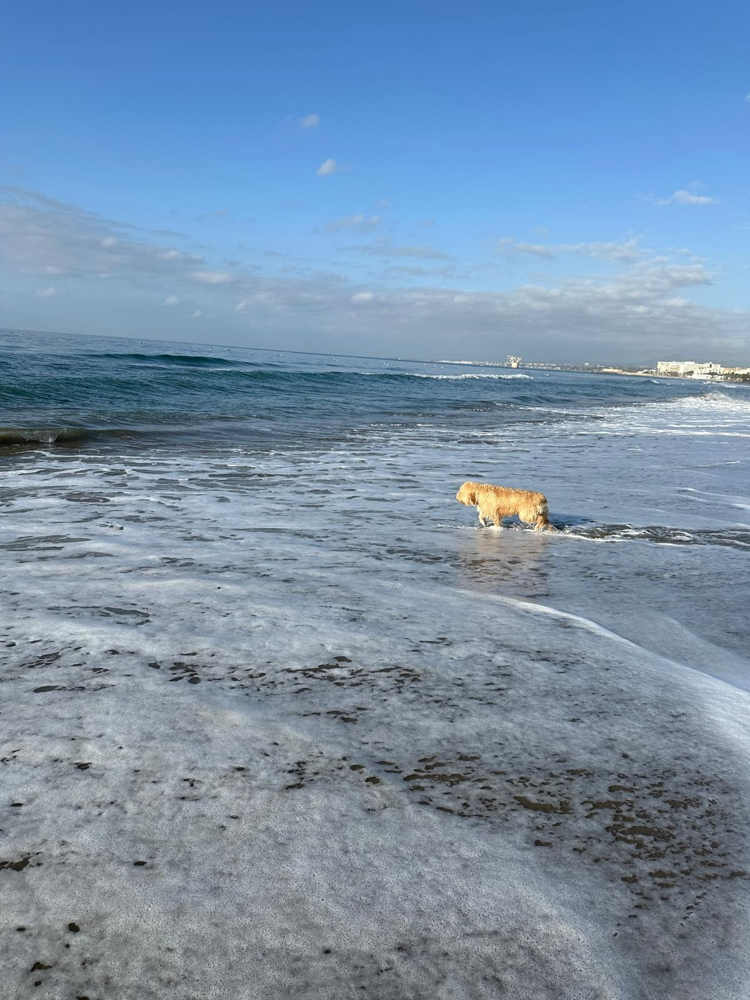
The El Pinillo dog beach: always full of enthusiastic beach-goers.
Dogs race across the sand, chase balls into the sea or run around with their canine friends while their owners chat nearby. Some are remarkably well behaved. Others are having far too much fun to listen to anyone.
Even if you don't have a dog, it's difficult to walk past without smiling.
The designated dog-friendly beach is a wonderful facility for people living in Rio Real and the surrounding neighbourhoods, particularly those who enjoy walking their dogs along the coast.
The Point Marbella and the Beach Clubs
Continue towards Marbella and you'll reach The Point Marbella.
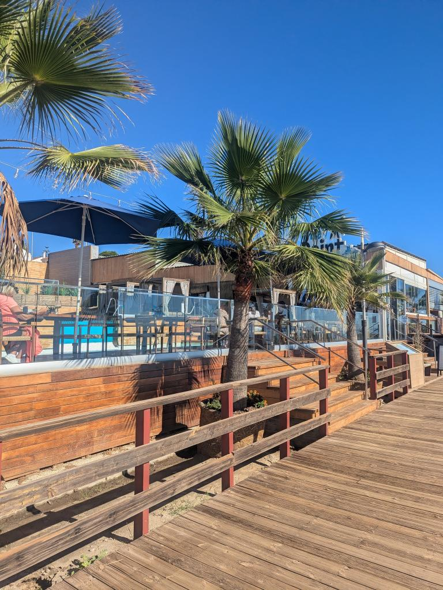
The Point Marbella, one of the beach clubs along the Senda Litoral route.
During the summer, this lively beach club, with its restaurant, pool and water sports, brings a completely different atmosphere to the coastline. I particularly enjoy walking past in the early evening when the DJ is playing some great tracks from around the world.
It's one of those little moments when I think how lucky we are to have all of this so close to home.
Just beyond The Point is the former Opium beach club and nightclub. It's currently closed, and like many local residents, I'm curious to see what happens to the site. Personally, I think it would make a fabulous yoga, Pilates and padel centre. But that's just me!
Parque del Mediterráneo: Sport, Families and the Beach
A small wooden bridge takes you towards the next stretch of beach and the Parque del Mediterráneo.
This is another part of the walk I particularly enjoy because there's nearly always something happening. The park is a major outdoor sports facility beside Playa El Pinillo, with beach volleyball courts, a beach football pitch and spaces for other sporting activities.
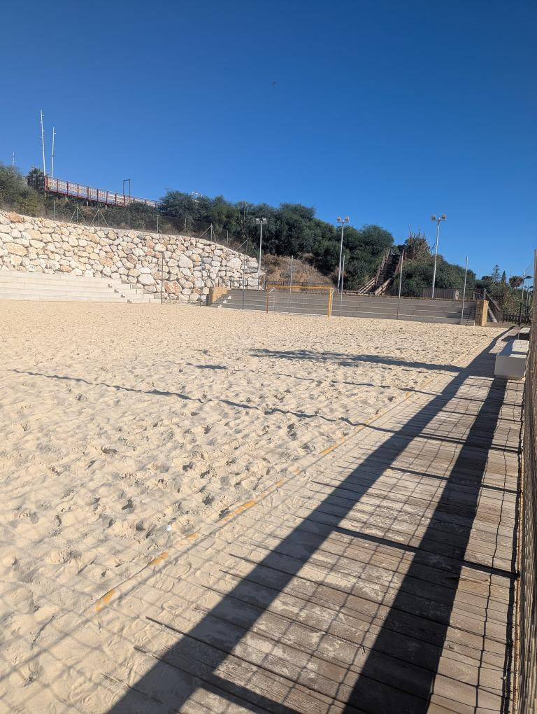
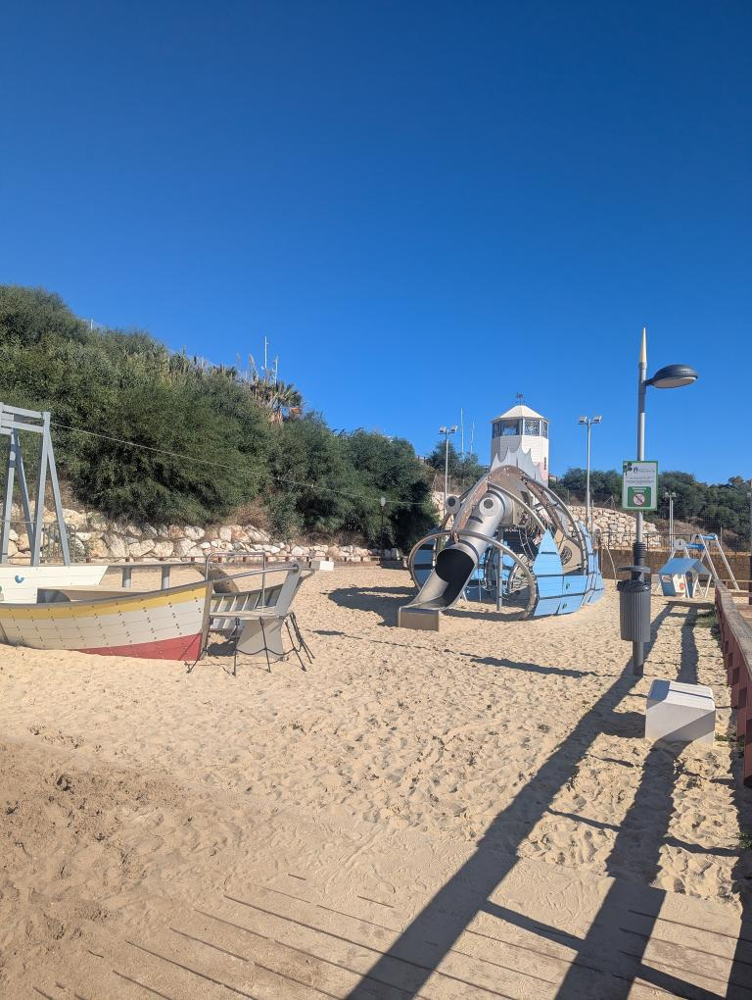
Parque del Mediterráneo: beach volleyball and the lighthouse-themed children's playground.
It's also home to a children's playground with a miniature zipline, swings and a wonderfully imaginative lighthouse-themed slide.
Throughout the year, the sports facilities host competitions and events. In October, I stopped to watch the Marbella Outdoor Championship, with athletes from around the world taking part in a beachside fitness competition. Think Hyrox, but on sand!
Something worth mentioning, especially for families and anyone planning a longer walk, is that there are public toilets and changing facilities along this section. In my experience, they're regularly cleaned and well maintained.
Playa del Cable: A Favourite with Marbella Locals
Next comes Playa del Cable, one of Marbella's most popular beaches with local Spanish residents.
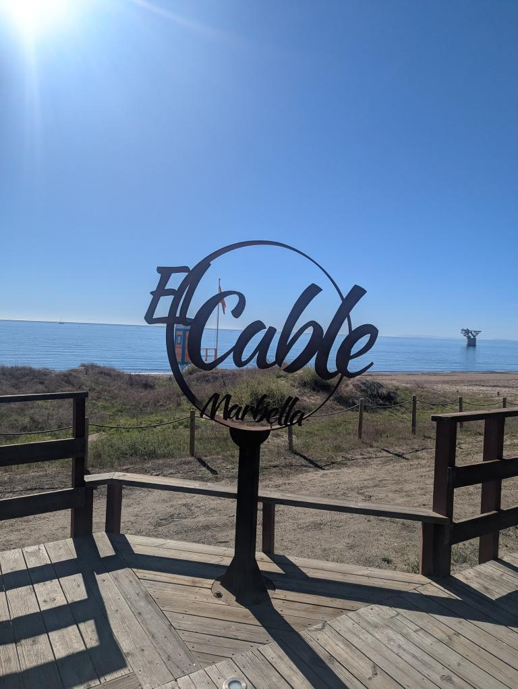
Playa del Cable: a wide, sandy stretch popular with local Marbella families.
It's a wide, sandy stretch of coastline where families gather, children play and people spend long summer days by the sea. There are lifeguards during the summer season, and the beach is popular for swimming when conditions allow.
You'll also find the recently reopened Bounty Beach bar, a welcome addition to this part of the coastline.
For anyone living in Rio Real or Bello Horizonte, Playa del Cable is a wonderful local beach to have so close. You can park at Parque del Mediterráneo, spend the day on the sand and enjoy lunch or a drink at one of the nearby beach restaurants. And if you're feeling energetic, you can always take a walk along the Senda Litoral before settling down for the afternoon.
From Playa del Cable Towards Marbella
After another small wooden bridge, the timber boardwalk gives way to a paved coastal path.
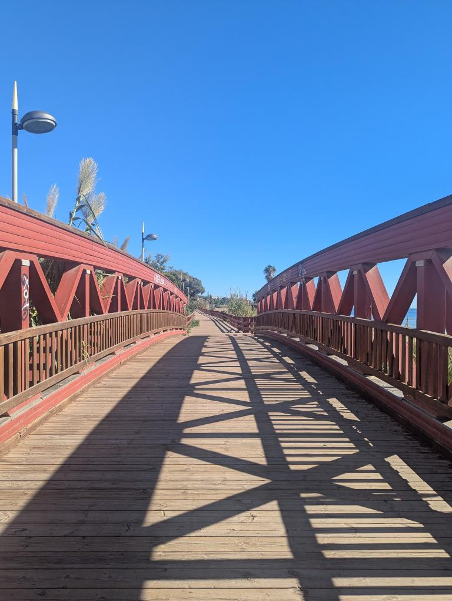
One of the small wooden bridges along the Senda Litoral, where the boardwalk transitions to a paved path.
This is a natural place to turn around if you're doing a shorter walk from Rio Real. But I usually like to carry on.
You pass La Dolce Vita beach restaurant and, a little further along, one of my favourite summer pit stops: El Kiosco. It's a tiny beach bar with just a handful of tables, usually open from around June to October. They make a fabulous Tinto de Verano, and there's something rather lovely about sitting here as the sun begins to set over Marbella. Nothing elaborate. Just a cold drink, the sea and a good view.
Playa Padre: A Little Ibiza on the Marbella Coast
Continue towards town and you'll reach Playa Padre, one of Marbella's best-known beach clubs.
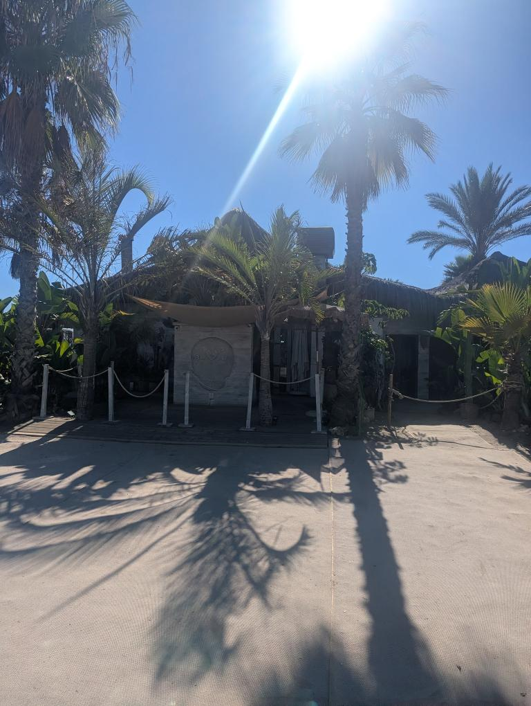
Playa Padre beach club: international DJs and an unmistakably Ibiza-esque atmosphere, right on the Marbella coastline.
International DJs including Black Coffee, La Mestiza, Peggy Gou and Sona have played here, bringing a distinctly international music scene to this stretch of the coast.
What I find interesting is that Playa Padre is very much a daytime and early-evening destination, rather than an all-night nightclub. Its events can run into the evening, with midnight generally the latest closing time.
I'm still slightly in awe that we have a beach club with this kind of international reputation sitting along my regular walking route. On quieter days, it's simply another beautiful part of the Marbella coastline.
The Fishermen's Huts and Puerto Pesquero
Beyond Playa Padre, the atmosphere changes again. You pass the old fishermen's huts, and this is one of my favourite parts of the entire walk.
You'll often see a fisherman sitting outside, listening to the radio while mending a net, or simply chatting with friends. There's something reassuring about this little piece of traditional Marbella, particularly when you consider how much the town has changed over the years.
A little further on, the path joins Marbella's main Paseo Marítimo, bringing you to the Puerto Pesquero, the town's fishing harbour.
At weekends, I often stop here for a coffee, lunch or an afternoon beer. There are several good, unpretentious places around the harbour, including Bar Luca, La Relojera, Canuto and El Hogar del Pesquero. The latter is a particular favourite. There's no conventional menu. They simply tell you what's available that day. It's a lovely way to finish the walk before heading home.
A Little Nature Along the Way
There's another aspect of this coastline that's easy to overlook when you're enjoying the beaches and restaurants.
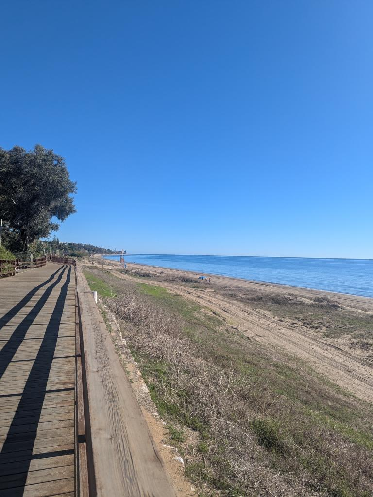
The natural dune landscape along the Río Real coastal area, protected by ProDunas Marbella.
The Rio Real and Torre Real coastal area is also home to remnants of Marbella's natural dune landscape. The local environmental organisation ProDunas Marbella has worked to protect and restore dune habitats around Torre Real and Rio Real, including areas affected by the construction of the coastal path.
These fragile environments support native Mediterranean vegetation and are an important reminder of what this coastline looked like before Marbella developed into the town we know today. It's worth taking a moment to appreciate the natural landscape as you walk, and keeping to the designated paths where dune restoration is taking place.
Why I Love This Walk
I've lived in Rio Real long enough to know that it's easy to take the surroundings for granted.
But this walk reminds me why I love living here. In the space of a few kilometres, you pass quiet beaches, dogs having the time of their lives, international beach clubs, families playing volleyball and fishermen going about their day. And you can experience all of it on foot, with the Mediterranean beside you.
Some days I walk quickly and barely stop. Other days I find an excuse for a coffee, a Tinto de Verano or a chat with someone I recognise.
It's one of those simple pleasures that makes living in Rio Real so special.
Thinking of Living Here?
Find a home with the Senda Litoral on your doorstep
We specialise in properties in Río Real and Marbella East, many within walking distance of the coastal path. If you'd like to know more about what's available, we'd be happy to help.
Browse PropertiesFrequently Asked Questions
About the Senda Litoral Walk
From Trocadero Arena at Rio Real beach to Marbella's Puerto Pesquero fishing harbour, the walk is approximately three kilometres.
Allow around 35 to 45 minutes each way, depending on your pace. A brisk walker can complete it in a little over 30 minutes, while a leisurely return walk takes approximately 70 to 90 minutes without stops.
A convenient starting point is Trocadero Arena at Playa Rio Real, accessed from the Rio Real and Torre Real area. You can follow the wooden coastal boardwalk west towards El Pinillo, Playa del Cable and Marbella's fishing harbour.
My favourite time is late afternoon, particularly when the sun is setting over Marbella. But I also love walking at around 9 or 10 in the morning, when the beaches are quieter and there's a lovely mix of local residents out exercising.
In the summer, early morning and evening are generally more comfortable than walking in the midday heat.
Yes, although walking times depend on exactly where you live. I often walk down from Lomas de Pozuelo, which takes me around 13 minutes.
From residential developments such as The Birdie Club, Monte Golf and Rio Real Golf Apartments, the beach and Senda Litoral can be reached on foot, with some routes taking approximately ten minutes. It's one of the attractions of living in Rio Real: you can enjoy a peaceful residential neighbourhood and still have the coast within walking distance.
Yes. Bello Horizonte and Real Panorama are conveniently positioned for accessing Playa del Cable and Parque del Mediterráneo. From some parts of these neighbourhoods, the beach is approximately ten minutes away on foot, although the route and walking time depend on the individual property.
You can join the coastal path here and walk east towards Rio Real or west towards Marbella.
Yes. There's parking close to Trocadero Arena at Rio Real beach, although spaces can be limited at busy times. At the Marbella end, Parque del Mediterráneo has a large public car park near Playa El Pinillo and Playa del Cable. It's a convenient alternative if you'd prefer to walk the route in reverse. Check the current parking tariff when you arrive.
Yes. Much of this section follows a wooden boardwalk or paved coastal path, making it a pleasant route for families. Parque del Mediterráneo is particularly good for children, with its playground and nearby beach. There are also places to stop for refreshments along the way, although some kiosks and beach restaurants operate seasonally.
Yes. The designated El Pinillo dog beach is along the coastal route between Rio Real and Marbella. It's popular with local dog owners and a lovely place to stop and watch the dogs enjoying themselves. Dogs should remain within the authorised beach area, and owners should follow the rules displayed at the beach.
Yes. Rio Real offers a range of apartments, penthouses, townhouses and villas, although proximity to the beach varies considerably between developments. Beachfront communities such as Rio Real Playa offer direct access to the coastal area, while properties around Rio Real Golf, Lomas de Pozuelo and other residential neighbourhoods may be a short walk or drive away.
If you're searching for property for sale in Rio Real, it's worth considering the actual walking route to the beach rather than relying on distance alone.
Property prices vary substantially according to location, views, size and proximity to the beach. As a general guide, beachfront apartments in Rio Real and Los Monteros can start from around €1.3 million, while apartments on the inland side of Rio Real, including some with sea views, may be available from approximately €600,000.
These are indicative asking-price ranges rather than fixed market values, and availability changes. For anyone looking at properties for sale in Rio Real, we can help identify homes that offer the right balance between location, budget and access to the coast.